- 00 开篇词 为什么大厂面试必考操作系统？.md.html
- 00 课前必读 构建知识体系，可以这样做！.md.html
- 01 计算机是什么：“如何把程序写好”这个问题是可计算的吗？.md.html
- 02 程序的执行：相比 32 位，64 位的优势是什么？（上）.md.html
- 03 程序的执行：相比 32 位，64 位的优势是什么？（下）.md.html
- 04 构造复杂的程序：将一个递归函数转成非递归函数的通用方法.md.html
- 05 存储器分级：L1 Cache 比内存和 SSD 快多少倍？.md.html
- 05 (1) 加餐 练习题详解（一）.md.html
- 06 目录结构和文件管理指令：rm -rf 指令的作用是？.md.html
- 07 进程、重定向和管道指令：xargs 指令的作用是？.md.html
- 08 用户和权限管理指令： 请简述 Linux 权限划分的原则？.md.html
- 09 Linux 中的网络指令：如何查看一个域名有哪些 NS 记录？.md.html
- 10 软件的安装： 编译安装和包管理器安装有什么优势和劣势？.md.html
- 11 高级技巧之日志分析：利用 Linux 指令分析 Web 日志.md.html
- 12 高级技巧之集群部署：利用 Linux 指令同时在多台机器部署程序.md.html
- 12 (1)加餐 练习题详解（二）.md.html
- 13 操作系统内核：Linux 内核和 Windows 内核有什么区别？.md.html
- 14 用户态和内核态：用户态线程和内核态线程有什么区别？.md.html
- 15 中断和中断向量：Javajs 等语言为什么可以捕获到键盘输入？.md.html
- 16 WinMacUnixLinux 的区别和联系：为什么 Debian 漏洞排名第一还这么多人用？.md.html
- 16 (1)加餐 练习题详解（三）.md.html
- 17 进程和线程：进程的开销比线程大在了哪里？.md.html
- 18 锁、信号量和分布式锁：如何控制同一时间只有 2 个线程运行？.md.html
- 19 乐观锁、区块链：除了上锁还有哪些并发控制方法？.md.html
- 20 线程的调度：线程调度都有哪些方法？.md.html
- 21 哲学家就餐问题：什么情况下会触发饥饿和死锁？.md.html
- 22 进程间通信： 进程间通信都有哪些方法？.md.html
- 23 分析服务的特性：我的服务应该开多少个进程、多少个线程？.md.html
- 23 (1)加餐 练习题详解（四）.md.html
- 24 虚拟内存 ：一个程序最多能使用多少内存？.md.html
- 25 内存管理单元： 什么情况下使用大内存分页？.md.html
- 26 缓存置换算法： LRU 用什么数据结构实现更合理？.md.html
- 27 内存回收上篇：如何解决内存的循环引用问题？.md.html
- 28 内存回收下篇：三色标记-清除算法是怎么回事？.md.html
- 28 (1)加餐 练习题详解（五）.md.html
- 29 Linux 下的各个目录有什么作用？.md.html
- 30 文件系统的底层实现：FAT、NTFS 和 Ext3 有什么区别？.md.html
- 31 数据库文件系统实例：MySQL 中 B 树和 B+ 树有什么区别？.md.html
- 32 HDFS 介绍：分布式文件系统是怎么回事？.md.html
- 32 (1)加餐 练习题详解（六）.md.html
- 33 互联网协议群（TCPIP）：多路复用是怎么回事？.md.html
- 34 UDP 协议：UDP 和 TCP 相比快在哪里？.md.html
- 35 Linux 的 IO 模式：selectpollepoll 有什么区别？.md.html
- 36 公私钥体系和网络安全：什么是中间人攻击？.md.html
- 36 (1)加餐 练习题详解（七）.md.html
- 37 虚拟化技术介绍：VMware 和 Docker 的区别？.md.html
- 38 容器编排技术：如何利用 K8s 和 Docker Swarm 管理微服务？.md.html
- 39 Linux 架构优秀在哪里.md.html
- 40 商业操作系统：电商操作系统是不是一个噱头？.md.html
- 40 (1)加餐 练习题详解（八）.md.html
- 41 结束语 论程序员的发展——信仰、选择和博弈.md.html
- 捐赠
31 数据库文件系统实例：MySQL 中 B 树和 B+ 树有什么区别？
这一讲给你带来的关联面试题是：MySQL 中 B 树和 B+ 树的区别？
B 树和 B+ 树是两种数据结构（关于它们的名字为什么以 B 开头，因为众说纷纭，本讲我就不介绍了），构建了磁盘中的高速索引结构，因此不仅 MySQL 在用，MongoDB、Oracle 等也在用，基本属于数据库的标配常规操作。
数据库要经常和磁盘与内存打交道，为了提升性能，通常需要自己去构建类似文件系统的结构。这一讲的内容有限，我只是先带你入一个门，如果你感兴趣后续可以自己深入学习。下面我们一起来探讨数据库如何利用磁盘空间设计索引。
行存储和列存储
在学习构建磁盘数据的索引结构前，我们先通过行存储、列存储的学习来了解一些基本的存储概念，帮助你建立一个基本的认知。
目前数据库存储一张表格主要是行存储（Row Storage）和列存储（Column Storage）两种存储方式。行存储将表格看作一个个记录，每个记录是一行。以包含订单号、金额、下单时间 3 项的表为例，行存储如下图所示：
如上图所示，在计算机中没有真正的行的概念。行存储本质就是数据一个接着一个排列，一行数据后面马上跟着另一行数据。如果订单表很大，一个磁盘块（Block）存不下，那么实际上就是每个块存储一定的行数。 类似下图这样的结构：
行存储更新一行的操作，往往可以在一个块（Block）中进行。而查询数据，聚合数据（比如求 4 月份的订单数），往往需要跨块（Block）。因此，行存储优点很明显，更新快、单条记录的数据集中，适合事务。但缺点也很明显，查询慢。
还有一种表格的存储方式是列存储（Column Storage），列存储中数据是一列一列存的。还以订单表为例，如下图所示：
你可以看到订单号在一起、姓名在一起、时间在一起、金额也在一起——每个列的数据都聚集在一起。乍一看这样的结构很低效，比如说你想取出第一条订单，需要取第 1 列的第 1 个数据1001，然后取第 2 列的第 1 个数据小明，以此类推，需要 4 次磁盘读取。特别是更新某一条记录的时候，需要更新多处，速度很慢。那么列存储优势在哪里呢？优势其实是在查询和聚合运算。
在列存储中同一列数据总是存放在一起，比如要查找某个时间段，很有可能在一个块中就可以找到，因为时间是集中存储的。假设磁盘块的大小是 4KB，一条记录是 100 字节， 那么 4KB 可以存 40 条记录；但是存储时间戳只需要一个 32 位整数，4KB 可以存储 1000 个时间。更关键的是，我们可以把一片连续的硬盘空间通过 DMA 技术直接映射到内存，这样就大大减少了搜索需要的时间。所以有时候在行存储需要几分钟的搜索操作，在列存储中只需几秒钟就可以完成。
总结一下，行存储、列存储，最终都需要把数据存到磁盘块。行存储记录一个接着一个，列存储一列接着一列。前面我们提到行存储适合更新及事务处理，更新好理解，因为一个订单可以在相同的 Block 中更新，那么为什么适合事务呢？
其实适合不适合是相对的，说行存储适合是因为列存储非常不适合事务。试想一下，你更新一个表的若干个数据，如果要在不同块中更新，就可能产生多次更新操作。更新次数越多，保证一致性越麻烦。在单机环境我们可以上锁，可以用阻塞队列，可以用屏障……但是分布式场景中保证一致性（特别是强一致性）开销很大。因此我们说行存储适合事务，而列存储不适合。
索引
接下来，我们在行存储、列存储的基础上，讨论如何创建一些更高效的查询结构，这种结构通常称为索引。我们经常会遇到根据一个订单编号查订单的情况，比如说select * from order where id=1000000，这个时候就需要用到索引。而下面我将试图通过二分查找的场景，和你一起讨论索引是什么。
在亿级的订单 ID 中查找某个编号，很容易想到二分查找。要理解二分查找，最需要关心的是算法的进步机制。这个算法每进行一次查找，都会让问题的规模减半。当然，也有场景限制，二分查找只能应用在排序好的数据上。
比如我们要在下面排序好的数组中查找 3：
1,3,5,8,11,12,15,19,21,25
数组中一共有 10 个元素，因此我们第一次查找从数组正中间的元素找起。如果数组正中间有两个元素，就取左边的那个——对于这个例子是 11。我们比较 11 和 3 的值，因为 11 大于 3，因此可以排除包括 11 在内的所有 11 右边的元素。相当于我们通过一次运算将数据的规模减半。假设我们有 240 （1T 数据）个元素需要查询（规模已经相当大了，万亿级别），用二分查找只需要 40 次运算。
所以按照这个思路，我们需要做的是将数据按照订单 ID 排好序，查询的时候就可以应用二分查找了。而且按照二分查找的思路，也可以进行范围查找。比如要查找 [a,b] 之间的数据，可以先通过二分查找找到 a 的序号，再二分找到 b 的序号，两个序号之间的数据就是目标结果。
但是直接在原始数据上排序，我们可能会把数据弄乱，常规做法是设计冗余数据描述这种排序关系——这就是索引。下面我通过一个简单的例子告诉你为什么不能在原始数据上直接排序。
假设我们有一个订单表，里面有订单 ID 和金额。使用列存储做演示如下：
订单 ID 列：
10005 10001 ……
订单金额列：
99.00 100.00 ……
可以看到，订单（10001）是第 2 个订单。但是进行排序后，订单（10001）会到第 1 个位置。这样会弄乱订单 ID（10001）和 金额（100.00）对应的关系。
因此我们必须用空间换时间，额外将订单列拷贝一份排序：
10001，2，10005， 1
以上这种专门用来进行数据查询的额外数据，就是索引。索引中的一个数据，也称作索引条目。上面的索引条目一个接着一个，每个索引条目是 <订单 ID, 序号> 的二元组。
如果你考虑是行存储（比如 MySQL），那么依然可以生成上面的索引，订单 ID 和序号（行号）关联。如果有多个索引，就需要创造多个上面的数据结构。如果有复合索引，比如 <订单状态、日期、序号> 作为一个索引条目，其实就是先按照订单状态，再按照日期排序的索引。
所以复合索引，无非就是多消耗一些空间，排序维度多一些。而且你可以看出复合索引和单列索引完全是独立关系，所以我们可以认为每创造一组索引，就创造了一份冗余的数据。也创造了一种特别的查询方式。关于索引还有很多有趣的知识，我们先介绍这些，如果感兴趣可以自己查资料深挖。
接下来，请分析一个非常核心的问题：上面的索引是一个连续的、从小到大的索引，那么应不应该使用这种从小到大排序的索引呢？例如，我们需要查询订单，就事先创建另一个根据订单 ID 从小到大排序的索引，当用户查找某个订单的时候，无论是行存储、还是列存储，我们就用二分查找查询对应的索引条目。这种方式，我们姑且称为线性排序索引——看似很不错的一个方式，但是并不是非常好的一种做法，请看我接下来的讨论。
二叉搜索树
线性排序的数据虽然好用，但是插入新元素的时候性能太低。如果是内存操作，插入一个元素，需要将这个元素之后的所有元素后移一位。但如果这个操作发生在磁盘中呢？这必然是灾难性的。因为磁盘的速度比内存慢至少 10-1000 倍，如果是机械硬盘可能慢几十万到百万倍。
所以我们不能用一种线性结构将磁盘排序。那么树呢？ 比如二叉搜索树（Binary Serach Tree）行不行呢？利用磁盘的空间形成一个二叉搜索树，例如将订单 ID 作为二叉搜索树的 Key。
如下图所示，二叉搜索树的特点是一个节点的左子树的所有节点都小于这个节点，右子树的所有节点都大于这个节点。而且，因为索引条目较少，确实可以考虑在查询的时候，先将足够大的树导入内存，然后再进行搜索。搜索的算法是递归的，与二分查找非常类似，每次计算可以将问题规模减半。当然，具体有多少数据可以导入内存，受实际可以使用的内存数量的限制。
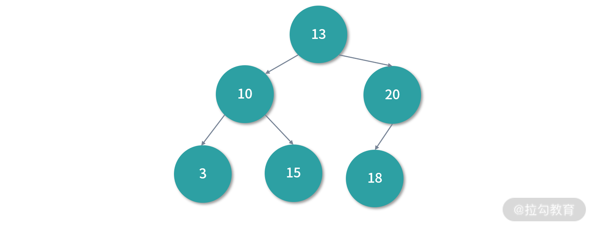
在上面的二叉搜索树中，每个节点的数据分成 Key 和 Value。Key 就是索引值，比如订单 ID 创建索引，那么 Key 就是订单 ID。值中至少需要序号（对行存储也就是行号）。这样，如果们想找 18 对应的行，就可以先通过二叉搜索树找到对应的行号，然后再去对应的行读取数据。
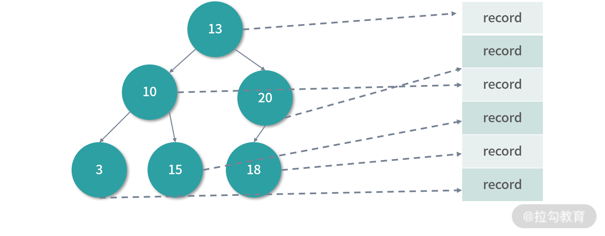
二叉搜索树是一个天生的二分查找结构，每次查找都可以减少一半的问题规模。而且二叉搜索树解决了插入新节点的问题，因为二叉搜索树是一个跳跃结构，不必在内存中连续排列。这样在插入的时候，新节点可以放在任何位置，不会像线性结构那样插入一个元素，所有元素都需要向后排列。
那么回到本质问题，在使用磁盘的时候，二叉搜索树是不是一种合理的查询结构？
当然还不算，因此还需要继续优化我们的算法。二叉搜索树，在内存中是一个高效的数据结构。这是因为内存速度快，不仅可以随机存取，还可以高频操作。注意 CPU 缓存的穿透率只有 5% 左右，也就是 95% 的操作是在更快的 CPU 缓存中执行的。而且即便穿透，内存操作也是在纳秒级别可以完成。
但是，这个逻辑在磁盘中是不存在的，磁盘的速度慢太多了。我们可以尝试把尽可能多的二叉搜索树读入磁盘，但是如果数据量大，只能读入一部分呢？因此我们还需要继续改进算法。
B 树和 B+ 树
二叉搜索树解决了连续结构插入新元素开销很大的问题，同时又保持着天然的二分结构。但是，当需要索引的数据量很大，无法在一个磁盘 Block 中存下整棵二叉搜索树的时候。每一次递归向下的搜索，实际都是读取不同的磁盘块。这个时候二叉搜索树的开销很大。
试想一个一万亿条订单的表，进行 40 次查找找到答案，在内存中不是问题，要考虑到 CPU 缓存有 90% 以上的命中率（当然前提是内存足够大）。通常情况下我们没有这么大的内存空间，如果 40 次查找发生在磁盘上，也是非常耗时的。那么有没有更好的方案呢？
一个更好的方案，就是继续沿用树状结构，利用好磁盘的分块让每个节点多一些数据，并且允许子节点也多一些，树就会更矮。因为树的高度决定了搜索的次数。
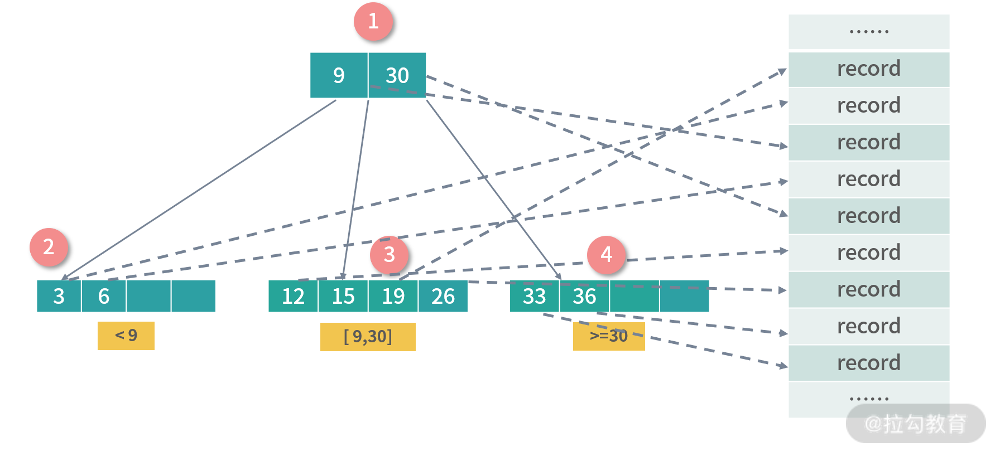
上图中我们构造的树被称为 B 树（B-Tree），开头说过，B 这个字母具体是哪个单词或者人名的缩写，至今有争议，具体你可以查查资料。
B-Tree 是一种递归的搜索结构，与二叉搜索树非常类似。不同的是，B 树中的父节点中的数据会对子树进行区段分割。比如上图中节点 1 有 3 个子节点，并用数字 9,30 对子树的区间进行了划分。
上图中的 B 树是一个 3-4 B 树，3 指的是每个非叶子节点允许最大 3 个索引，4 指的是每个节点最多允许 4 个子节点，4 也指每个叶子节点可以存 4 个索引。上面只是一个例子，在实际的操作中，子节点有几十个、甚至上百个索引也很常见，因为我们希望树变矮，好减少磁盘操作。
B 树的每个节点是一个索引条目（例如：一个 <订单 ID，序号> 的组合），如果是行数据库可以索引到一条存储在磁盘上的记录。
继承 B 树：B+ 树
为了达到最高的效率，实战中我们往往使用的是一种继承于 B 树设计的结构，称为 B+ 树。B+ 树只有叶子节点才映射数据，下图中是对 B 树设计的一种改进，节点 1 为冗余节点，它不存储数据，只划定子树数据的范围。你可以看到节点 1 的索引 Key：12 和 30，在节点 3 和 4 中也有一份。
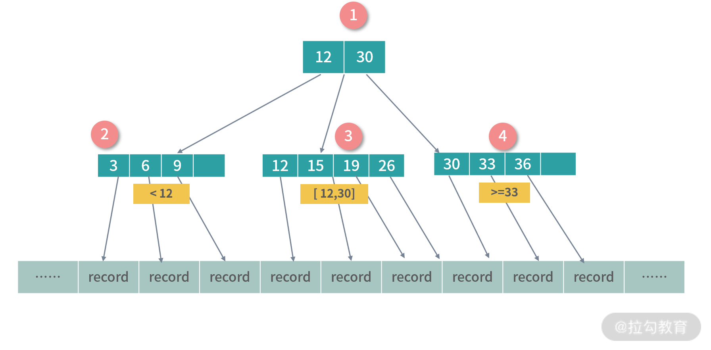
树的形成：插入
下面我以一棵 2-3 B+ 树来演示 B+ 树的插入过程。2 指的是 B+ 树每个非叶子节点允许 2 个数据，叶子节点最多允许 3 个索引，每个节点允许最多 3 个子节点。我们要在 2-3 B+ 树中依次插入 3,6,9,12,19,15,26,8,30。下图是演示：

插入 3,6,9 过程很简单，都写入一个节点即可，因为叶子节点最多允许每个 3 个索引。接下来我们插入 12，会发生一次过载，然后节点就需要拆分，这个时候按照 B+ 树的设计会产生冗余节点。
然后插入 15 非常简单，直接加入即可：
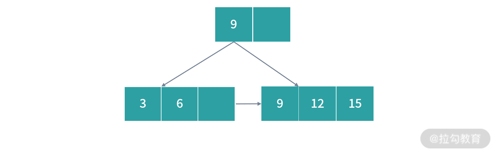
接下来插入 19， 这个时候下图中红色部分发生过载：
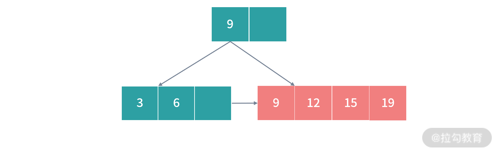
因此需要拆分节点数据，我们从中间把红色的节点拆开，15 作为冗余的索引写入父节点，就形成下图的情况：
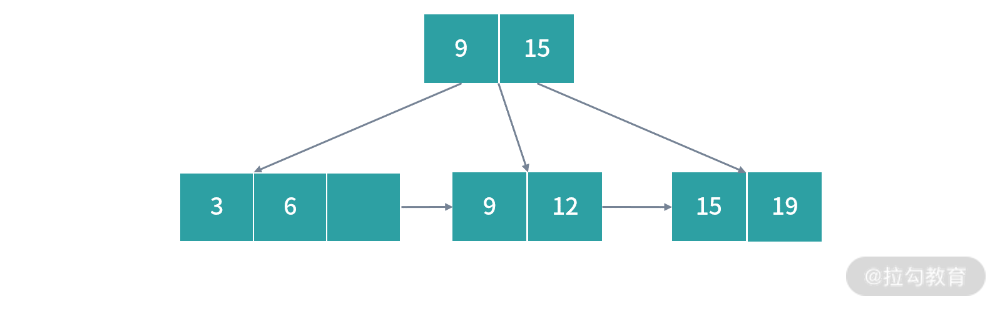
接着插入 26， 写入到对应位置即可。
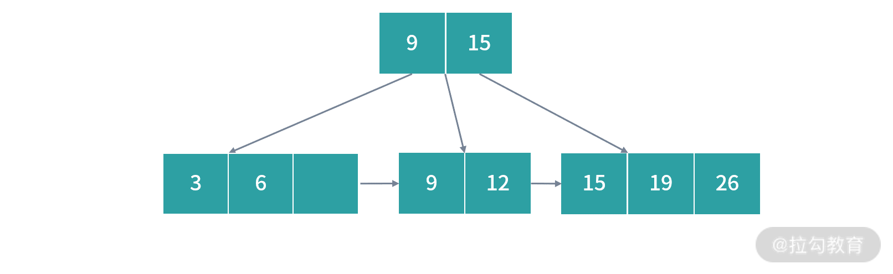
接下来，插入 8 到对应位置即可。
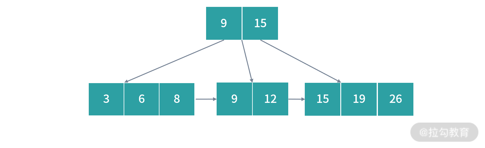
然后我们插入 30，此时右边节点发生过载：
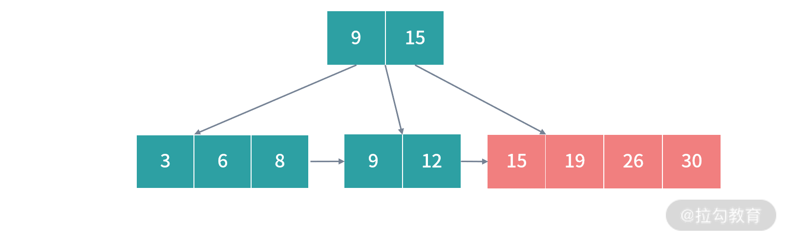
解决完一次过载问题之后，因为 26 会浮上去，根节点又发生了过载：
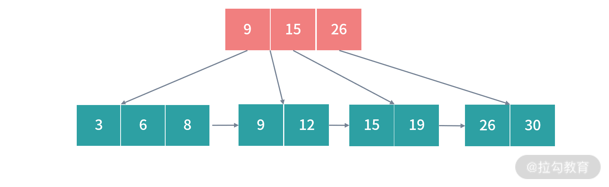
再次解决过载，拆分红色部分，得到最后结果：
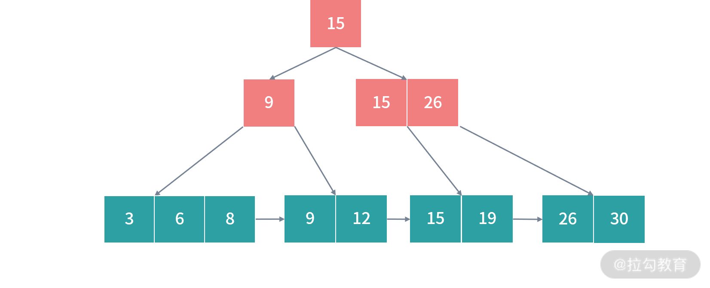
在上述过程中，B+ 树始终可以保持平衡状态，而且所有叶子节点都在同一层级。更复杂的数学证明，我就不在这里讲解了。不过建议对算法感兴趣对同学，可以学习《算法导论》中关于树的部分。
插入和删除效率
B+ 树有大量的冗余节点，比如删除一个节点的时候，可以直接从叶子节点中删除，甚至可以不动非叶子节点。这样删除非常快。B 树则不同，B 树没有冗余节点，删除节点的时候非常复杂。比如删除根节点中的数据，可能涉及复杂的树的变形。
B+ 树的插入也是一样，有冗余节点，插入可能存在节点的拆分（如果节点饱和），但是最多只涉及树的一条路径。而且 B+ 树会自动平衡，不需要更多复杂的算法，类似红黑树的旋转操作等。
因此，B+ 树的插入和删除效率更高。
搜索：链表的作用
B 树和 B+ 树搜索原理基本一致。先从根节点查找，然后对比目标数据的范围，最后递归的进入子节点查找。
你可能会注意到，B+ 树所有叶子节点间还有一个链表进行连接。这种设计对范围查找非常有帮助，比如说我们想知道 1 月 20 日和 1 月 22 日之间的订单，这个时候可以先查找到 1 月 20 日所在的叶子节点，然后利用链表向右遍历，直到找到 1 月22 日的节点。这样我们就进一步节省搜索需要的时间。
总结
这一讲我们学习了在数据库中如何利用文件系统造索引。无论是行存储还是列存储，构造索引的过程都是类似的。索引有很多做法，除了 B+ 树，还有 HashTable、倒排表等。如果是存储海量数据的数据库，我们的思考点需要放在 I/O 的效率上。如果把今天的知识放到分布式数据库上，那除了需要节省磁盘读写还需要节省网络 I/O。
那么通过这一讲的学习，你现在可以尝试来回答本讲关联的面试题目：MySQL 中的 B 树和 B+ 树有什么区别？
【解析】B+ 树继承于 B 树，都限定了节点中数据数目和子节点的数目。B 树所有节点都可以映射数据，B+ 树只有叶子节点可以映射数据。
单独看这部分设计，看不出 B+ 树的优势。为了只有叶子节点可以映射数据，B+ 树创造了很多冗余的索引（所有非叶子节点都是冗余索引），这些冗余索引让 B+ 树在插入、删除的效率都更高，而且可以自动平衡，因此 B+ 树的所有叶子节点总是在一个层级上。所以 B+ 树可以用一条链表串联所有的叶子节点，也就是索引数据，这让 B+ 树的范围查找和聚合运算更快。
© 2019 - 2023 Liangliang Lee. Powered by gin and hexo-theme-book.